고객후기
먼저 맡겨 본대표님들의 이야기
숫자보다 먼저, 대표님들이 직접 하신 말을 보여 드립니다.
대표님이 보내 주신 말
함께 일하며 카카오톡으로 받은 말을 그대로 옮겼습니다. 아래는 그 대화의 실제 캡처입니다.
-
문의가 늘었어요
6개월 동안 통 전화 없다가 들어오는 이 느낌, 너무 좋아요
“문의 전화 조금씩 들어오는 거 같군요”
철거 · 폐기물 수거 대표님
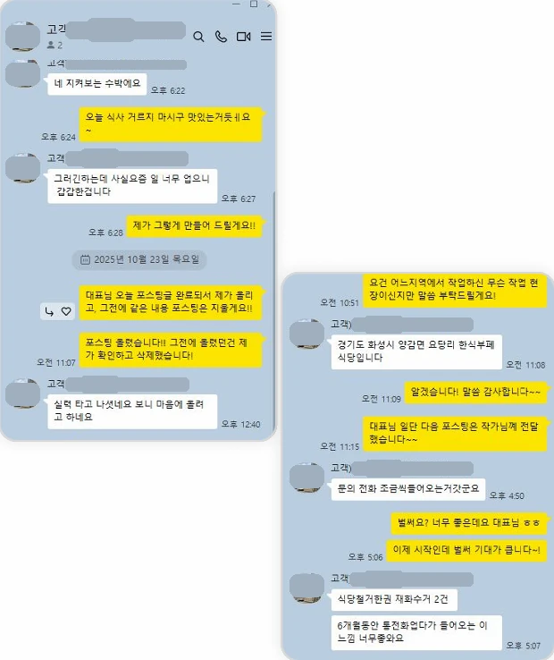
원본 캡처 보기 -
문의가 늘었어요
덕분에 문의가 조금 늘어서 바쁘게 보내고 있습니당
“전화로 블로그 보고 연락드렸어요 하시거나 톡톡으로 문의하시더라구요”
소음방지 바닥장판 · 바닥매트 시공 대표님
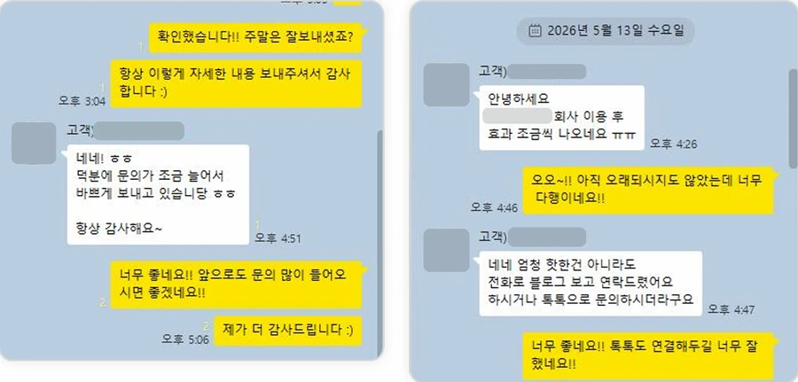
원본 캡처 보기 -
계약 · 소개로 이어졌어요
블로그 보고 바로 윗집에서 연락 와서 시공한 거예요
“또 있으면 연결해 드릴게요”
인테리어 필름 대표님
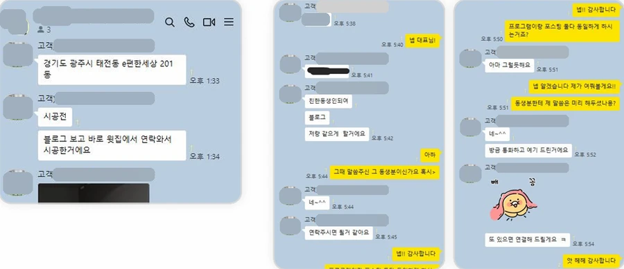
원본 캡처 보기 -
문의가 늘었어요
팀장님 덕분에 블로그가 커져서 요새 일이 정신없네요
욕실 리모델링 · 인테리어 대표님
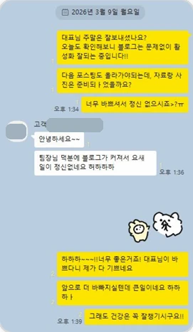
원본 캡처 보기 -
검색 상위에 올랐어요
플레이스도 1등 올라갔어요, 감사 감사~
수학학원 대표님
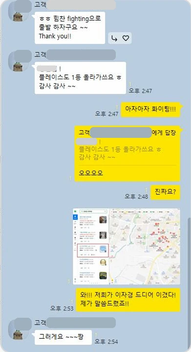
원본 캡처 보기 -
문의가 늘었어요
그래도 블로그 보고 연락이 오네요, 감사해요
인테리어 · 사이니지 시공 대표님
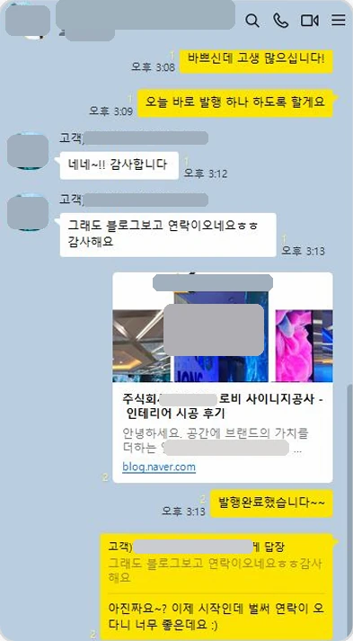
원본 캡처 보기 -
검색 상위에 올랐어요
와~ 덕분에 1위 하나 했네요~ 감사합니다!!
비둘기 오물 청소 대표님
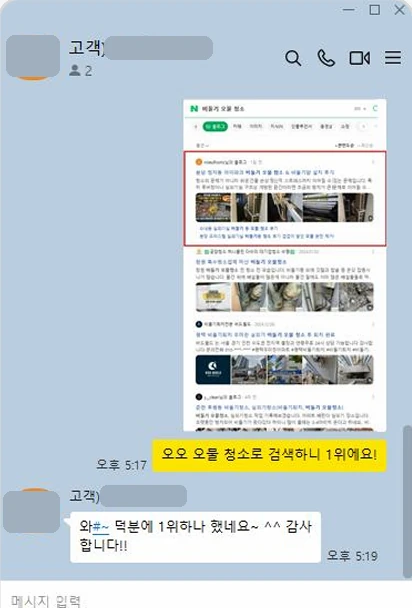
원본 캡처 보기 -
만족해요
블로그 보는 재미를 느끼고 있어요~ 오늘 좋은 느낌이에요
수제 도시락 · 케이터링 대표님
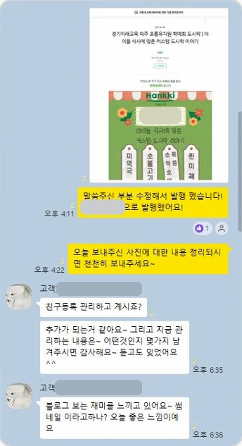
원본 캡처 보기 -
만족해요
노출이 되는 거 같아요, 만족하고 있습니다
주방 후드 교체 · 청소 대표님
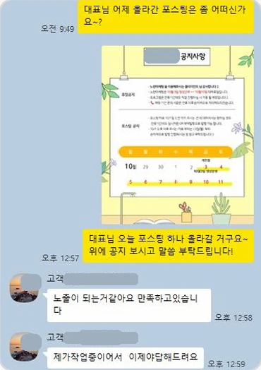
원본 캡처 보기 -
만족해요
네 감사합니다. 효과가 있네요
중고 포장 · 식품 설비 대표님
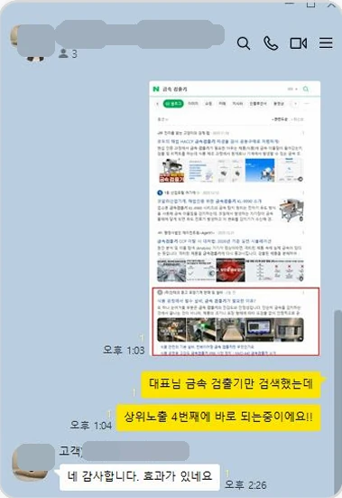
원본 캡처 보기 -
만족해요
글 좋습니다.
임시저장한 원고를 발행 전에 보내 드리자 온 답장
고철 · 폐기물 처리 대표님
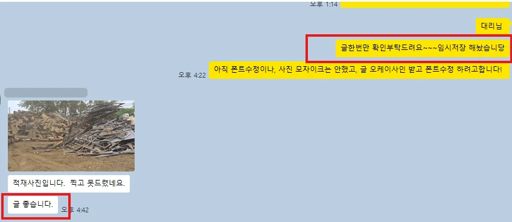
원본 캡처 보기


블로그를 보고 들어온 문의
대표님 업체로 실제로 들어온 톡톡 · 댓글 문의입니다. 문의한 분의 이름은 가렸습니다.
-
네이버 톡톡입주 · 이사 청소
원룸 청소 때문에 문의 남깁니다! 청소 가격이 어떻게 되는지 알 수 있을까요?
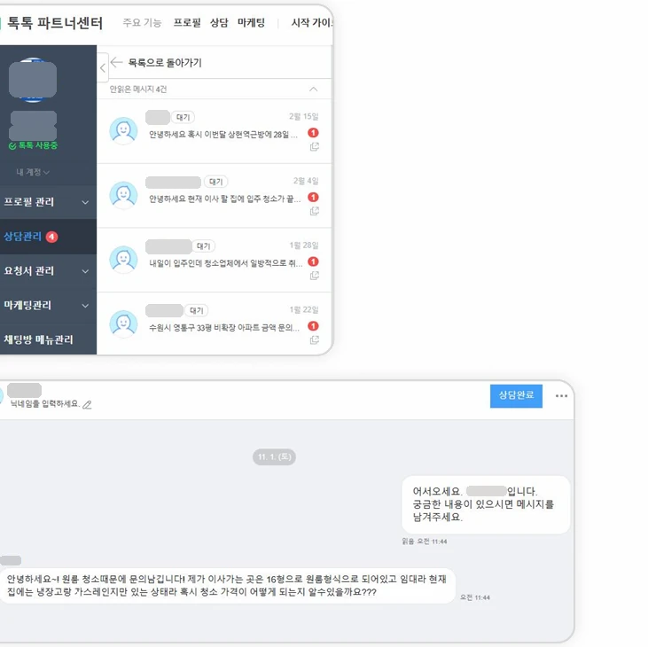
-
네이버 톡톡단체급식 · 도시락
구월동 입원실 있는 한의원인데요, 이동급식 관련해서 문의 사항이 있습니다
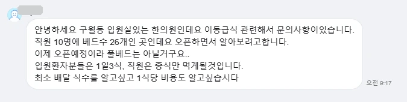
-
네이버 톡톡곰팡이 제거
안방 붙박이장 뒤 곰팡이 제거, 붙박이장 교체는 안 하시나요?
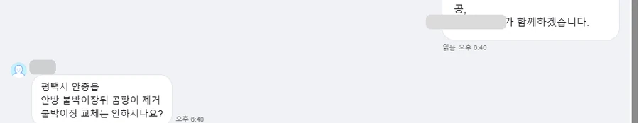
-
네이버 톡톡곰팡이 제거
싱크대 바닥 곰팡이 부분, 빠르면 빠를수록 좋음
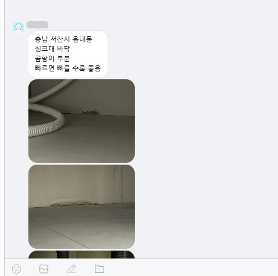
-
블로그 댓글PC방
PC방 혜택도 받아지나요?
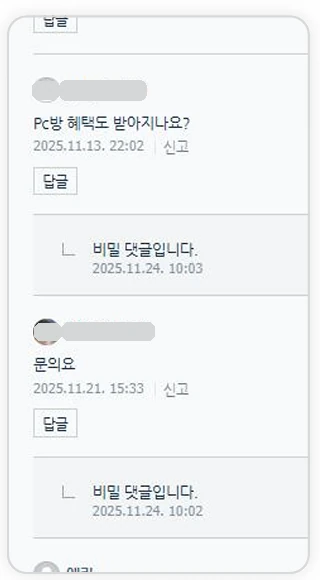


끌리는 브랜드는검색에서 시작됩니다
카카오톡으로 블로그나 홈페이지 주소를 보내 주세요. 지금 상태를 무료로 진단하고, 업종에 맞는 시작점을 안내해 드립니다.